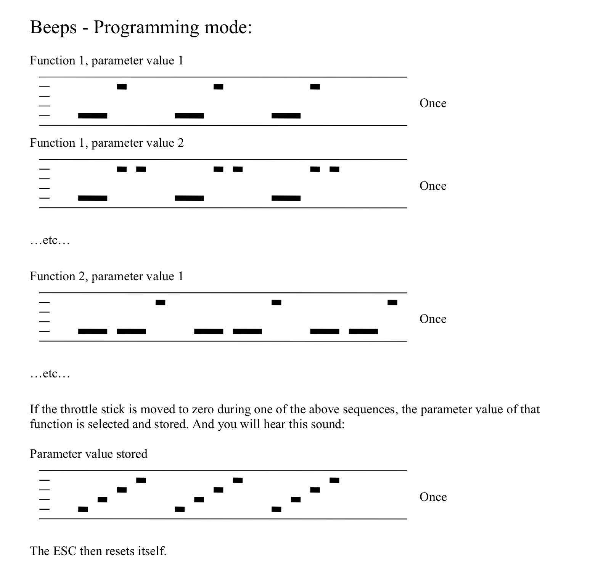

你想改一下BLHeli的参数，但是你没有BLHeli的编程器？你不想操作电脑？你已经在飞场了，根本没有电脑？ 你讨厌使用编程器和blhelisuite? 全部设备都安装好了，你不想再拆下电调了？ 你满足上面任一下条件，同时你有一个遥控器，你有一个接收机，一个BLHELI的电调，电机也焊好在电调上了。那么以下内容非常适合你看看。
RX42BL接收接集成了两个标准的blheli电调，可以某宝输入型号找到购买链接。
以下内容只是适用于blheli电调，不适用于blheli-s，也不是blheli32。油门的输入信号为PWM。它还支持PPM的输入，PPM设置流程和方法请参考原文档。
1. 可以设置的参数
一共有11个参数可以调，如上，绿色是默认值， 翻译如下：
如6 换向时序，一个般翻译为进角（换向时序）调整 对于工作异常的电机，调整进角参数可能解决问题。
请保存或打印这个表，调参的时候必须看着这个表才能进行调参。
调参之前一定要接上无刷电机，这样才会听到声音， 是电机发出“哔”的声音的。
2. 电调上电时的正常解锁流程：
举例子， 以正常的零油门(通常是3通摇杆最低）上电， 声音（“哔”）情况如下。
1. 开机时（Power UP），电调会发出 一个升调 三声“哔哔哔”。
2. 当油门升至零以上时(Throttle up)，会发出一声长低音。这表示启动序列开始。
3. 当油门再次降至零时(Zero Throttle)，会发出一声长高音。这表示启动序列结束。
3. 进入参数设置模（编程模式)
如果在上一节的解锁过程（解锁流程结束之前）中检测到油门达到 100% ，ESC 就会进入编程模式, 流程如下：
- 开机（Power UP）时，电调会发出三声"哔"的提示音。
- 油门提升至零以上（Throttle up）时，将发出一声长低音"哔"，表示启动序列开始。
- 检测到全油门（Full Throttle 100%）时，会连续发出4声短促高音"哔"。
- 油门归零（Zero Throttle）时，将发出4组低音双响"哔哔"。
- 再次检测到全油门（Full Throttle）时，会发出4声升调"哔哔哔哔"，此时即进入编程模式。
编程模式下的参数通过声音（哔）告诉我们的，参数识别方法如下图：

我解释一下上图的图，
在功能1（function 1）中：
- 第一个参数（Param value1）会发一个长"哔"音，接着是1个短的"哔"音， 重复三次
- 第二个参数（Param value2）会发出一个长"哔"音， 接着是1个短的"哔-哔"音，重复三次
在功能2（function 2）中：
- 第一个参数（Param value1）会发出一个长的"哔-哔"音，接着是，一个短"哔"音，重复三次
以此类推，当保持全油门时，电调会从功能1依次播放到功能11的提示音，对应参数设置表中的11个功能。
若在播放过程中检测到零油门，电调会发出四声升调"哔哔哔哔"音，表示参数已保存。
举例：
如果你想把转向改为双向，你应该在 听到 ，十个长 “哔” 跟着三个短 “哔“ 的时候，把油门从全油门打到零油门（油门摇杆从最高拉到最低），然后你听到 四个升调的 “哔哔哔哔”的声音，你设置的就保存成功了。
另外，还四个重要的补充，
1. 如果油门杆低于最大油门位置（但未归零， 如油门摇杆打到2/3时），当前参数将被跳过，编程将进入下一个参数。这样，无需听完所有蜂鸣声即可访问(听到)后续参数。通常，在选择参数之前，最好再次将油门调至最大，以确保选择了正确的参数。
2. 油门会在功能/参数蜂鸣声之间的1秒间隔内读取。
3. 如果编程的过程中，油门杆从未归零，ESC将加载默认值，会在最后一个功能的最后一个参数值之后重置。这是一种将所有参数恢复为默认值的便捷方法。
4. 如果在编程过程中断电，则不会更改已编程的值。意思是说，如果你不想修改，也不想被重置参数，你要在最后一个功能的最后一个参数值之前，拔掉电调的电池。
第一点很重要，要不然如上面的例子，顺序到10这个功能参数，得听很长。 使用第一点的操作办法，我们可以比较快速的跳到第10个功能参数进行调整
4. 典型应用示例
4. 1 修改转向为双向（Rotation Direction ->BiDirectional)
- 进入编程模式
- 快速跳过前9个功能
- 在功能10听到 十长+三短 "哔"时
- 立即将油门从最高拉至最低
- 听到保存确认音即完成
4. 2 调转当前电调的转动方向为反向(Rotation Direction ->Reverse)
- 进入编程模式
- 快速跳过前9个功能
- 在功能10听到 十长 + 2短 "哔"时
- 立即将油门从最高拉至最低
- 听到保存确认音即完成